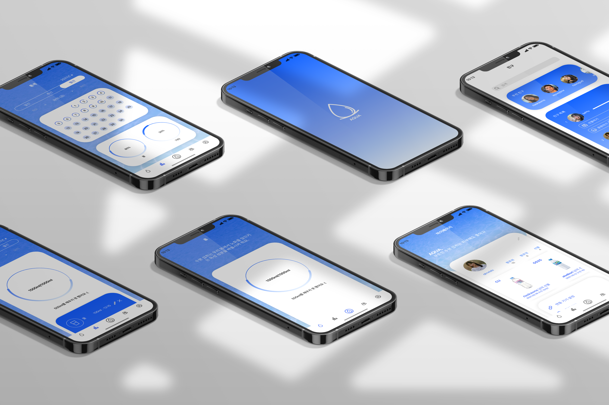

Seo Yerin
Portfolio website
HOME
WORK
UX/UI
PACKAGE
EDITORIAL
ADVERTISING
ABOUT
Simplicity is the Ultimate sophistication
_Leonardo da Vinch
UI/UX DESIGN
Mobile App Renuwal
복잡하지 않고 단순하게, 어렵지 않고 쉽게
step1
자유로운
서비스 사용시 다양한
경로 제공
step2
밝은
자유로운 분위기를 드러낼 수
있는 밝고 통통 튀는 컬러
step3
경쾌한
task flow를 시원하게 생략해
간편해진 앱 사용
Mobile App Design
수분 섭취 관리 앱, AQUA

step1
사용자 맞춤
신체 정보에 따른
하루 수분 섭취량 권장
step2
다양함
다양한 음료 기록
일간, 주간, 월간 별 통계
step3
커뮤니티
친구와 함께하는
수분 섭취 관리
Web Design
존 마에다, 단순함의 법칙
step1
심플
존 마에다, 단순함의 법칙에
따른 심플한 디자인 컨셉
step2
어두운
침착한 분위기를 드러낼 수
있는 어두운 컬러
step3
체계적인
심플, 어두운 앞의 두 키워드
를 따라가는 체계적인 정리